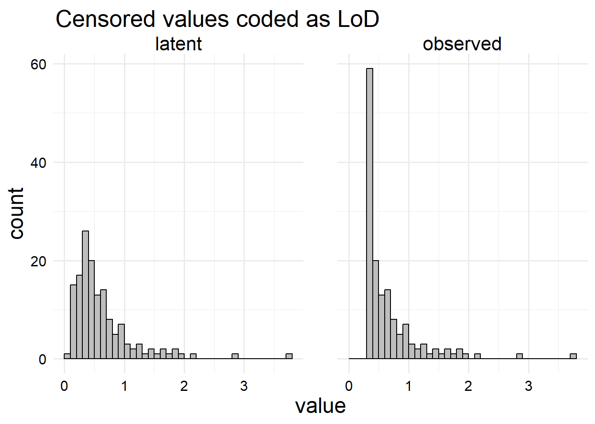

Loading 'brms' package (version 2.21.0). Useful instructions
can be found by typing help('brms'). A more detailed introduction
to the package is available through vignette('brms_overview').
Attaching package: 'brms'
The following object is masked from 'package:stats':
ar
Now that we’ve gone through a very broad overview of what censored data is, we’ll discuss a simple example with a censored outcome.
For this example, we’ll stay on the theme of concentrations that we started in the last chapter. Analyzing immunological, medical, or environmental concentrations is a common use case of censored data that doesn’t require us to also discuss the intricacies of time-to-event analysis. This time, we’ll consider the amount of glyphosate in household drinking water.
2.1 Glyphosate data simulation
In this first example, since we’re trying to understand these models, we’ll simulate our data from a known generative model. This allows us to be confident that our model for censored data is actually helping us to recover the correct parameters. Once we’re more comfortable with the model, we can try to analyze some data with unknown generative processeses.
Glyphosate is an organophosphonate pesticide originally marketed as Roundup by Monsanto. Roundup was quickly adopted for industrial agriculture, especially after the introduction of genetically modified Roundup-resistant crop species in the mid-90’s. Due to widespread agricultural use in the US, glyphosate is an increasingly common groundwater contaminant, with a Maximum Containment Level Goal of 0.7 parts per million in tap water set by the EPA.
Source population. Our fictional source population will be \(n\) randomly sampled households from a fictional city, indexed from \(i = 1, \ldots, n\). We only have one measurement per household. For the purposes of our study, we’ll assume that each of these houses has their own water supply (which is unrealistic but sufficient for a censored data tutorial).
Outcome variable. For this example, our outcome (or dependent) variable is \(y_i\), the log concentration of glyphosate in parts per million (ppm) detected from the tap in household \(i\) using an analytical test.
Censoring structure. Our investigators have decided to use the test described in this paper, which has a lower limit of detection of 2 µM. Given a molar mass of 169.07 g/Mol for glyphosate, we can convert this to an LoD of 0.33 ppm, just under half of the MCLG. We assume there is no upper LoD or interval censoring.
Independent variables. For the sake of this example, we will measure a few independent variables at the household level. Without doing any research on the actual patterns of glyphosate distribution in groundwater, we’ll assume that glyphosate concentration is affected by:
distance to the nearest agriculture site (km).
whether the home uses glyphosate-based pesticides for personal gardening.
whether the home has a water filter on the primary tap.
To get our data, we’ll first randomly generate our covariates. Let’s assume that our town of interest is a square, so we can normalize all of the distances so that each side of the square has length 1. Then (again somewhat unrealistically) we’ll assume that home X and Y coordinates are independently drawn from a uniform distribution on \((0, 1)\). For convenience, we’ll place the only farm in town at \((0.5, 0.5)\) and calculate the distances. Then since the other two independent variables are binary, we’ll randomly sample those for each house, say with respective probabilities \(0.2\) and \(0.4\).
Now we need to describe our data generating model for the outcome. Of course, I am just going to randomly pick some parameters and mess around until they look about right – we know that our glyphosate levels should be somewhere in the neighborhood of \((0, 1.4)\)-ish. We’ll use a linear model, which means we assume that: \[
\begin{aligned}
\log(y_i^*) &\sim \text{Normal}(\mu_i, \sigma^2) \\
\mu_i &= \beta_0 + \beta_1 x_{1, i} + \beta_2 x_{2, i} + \beta_3x_{3, i}.
\end{aligned}
\] Here, \(y_i\) is the concentration of glyphosate in tap water of house \(i\), \[x_{1, i}\] is the distance from house \(i\) to the farm, \(x_{2, i}\) is the personal glyphosate use variable, and \(x_{3, i}\) is the water filter use variable. So we need to pick all four of those \(\beta_p\) coefficients and the value of \(\sigma^2\), the residual variance, before we can simulate our glyphosate levels.
# Make a table of true coefs for using latercoefs <- tibble::tribble(~term, ~estimate,"(Intercept)", 0.8,"dist_from_farm", -4,"personal_gly_use", 0.5,"water_filter_use", -0.4 )res_sd <-0.25gly_data <- gly_preds |> dplyr::mutate(mu =0.8-4* dist_from_farm +0.5* personal_gly_use -0.4* water_filter_use,y_star =exp(rnorm(N, mu, res_sd)) )LoD <-0.33summary(gly_data)
house_x_coord house_y_coord dist_from_farm personal_gly_use
Min. :0.0003474 Min. :0.004179 Min. :0.04354 Min. :0.0000
1st Qu.:0.2796628 1st Qu.:0.243920 1st Qu.:0.25278 1st Qu.:0.0000
Median :0.5228575 Median :0.471412 Median :0.39295 Median :0.0000
Mean :0.5094258 Mean :0.484296 Mean :0.36918 Mean :0.2381
3rd Qu.:0.7452386 3rd Qu.:0.731020 3rd Qu.:0.46563 3rd Qu.:0.0000
Max. :0.9906258 Max. :0.998614 Max. :0.67715 Max. :1.0000
water_filter_use mu y_star
Min. :0.0000 Min. :-2.0985 Min. :0.09508
1st Qu.:0.0000 1st Qu.:-1.1521 1st Qu.:0.31413
Median :0.0000 Median :-0.7472 Median :0.47621
Mean :0.3878 Mean :-0.7128 Mean :0.62597
3rd Qu.:1.0000 3rd Qu.:-0.2702 3rd Qu.:0.76989
Max. :1.0000 Max. : 1.1258 Max. :3.71580
You can see from the above simulation code that the values I ended up choosing are as follows:
\[
\begin{aligned}
\log(y_i^*) &\sim \text{Normal}(\mu_i, 0.5^2) \\
\mu_i &= -2.5 + 2\cdot x_{1, i} + 0.5\cdot x_{2, i} -0.4\cdot x_{3, i}.
\end{aligned}
\] These values seemed to give a reasonable range of \(y\) values (on the natural scale), and have signs that made sense to me. The intercept represents the concentration of glyphosate expected in tap water for a person who lives on the farm, no personal glyphosate use, and no water filter, and is about \(2.23\) ppm, which is quite high and perhaps expected for the point source of the contaminant. With these parameters, we will have \(28.6\%\) of data points below the limit of detection, which is not ideal (of course the ideal is zero percent), but not too bad either.
\[
c_i = \begin{cases}
1, & y_i^* < 0.33 \text{ ppm} \\
0, & \text{otherwise}
\end{cases}.
\] Let’s first apply the censoring to our data. We’ll arbitrarily choose \(L = 0\). Then we’ll take a look at the data we would actually observe.
# Dataset including latent variables# Do the censoringL <-0.1gly_data_lnt <- gly_data |> dplyr::mutate(# Create the censoring indicatorc =ifelse(y_star <= LoD, 1, 0),# Create the censored outcomey =ifelse(c ==1, L, y_star) )# Dataset including ONLY the observed variablesgly_data_obs <- gly_data_lnt |> dplyr::select(dist_from_farm, personal_gly_use, water_filter_use, c, y)head(gly_data_obs)
Note that setting \(y_i = 0.1\) if the value is censored is completely arbitrary. Many people will set it to a value like the LoD, or half the LoD, or some crazy thing with \(\sqrt{2}\) in it, and then pretend those are the real values. All of these arbitrary values are equally bad. Let’s look at the distribution of the latent and observed values just to show this. In real life, we can’t see this, but this example should remind us that picking an arbitrary number is not very good.
# Arrange the data correctly for plottinggly_data_lnt |> dplyr::select("observed"= y,"latent"= y_star ) |> tidyr::pivot_longer(dplyr::everything()) |># Now make the plotggplot() +aes(x = value) +geom_histogram(boundary =0,binwidth =0.1,color ="black",fill ="gray" ) +facet_wrap(vars(name)) +ggtitle(paste0("Censored values coded as ", L))
Let’s also take a look at what the data would have looked like if we set, say \(L = 0.33\) (the LoD).
gly_data_lnt |># Set censored values to LoD dplyr::mutate(y =ifelse(y == L, 0.33, y)) |># Arrange the data for the plot dplyr::select("observed"= y,"latent"= y_star ) |> tidyr::pivot_longer(dplyr::everything()) |># Make the plotggplot() +aes(x = value) +geom_histogram(boundary =0,binwidth =0.1,color ="black",fill ="gray" ) +facet_wrap(vars(name)) +ggtitle("Censored values coded as LoD")

We can see how this histogram makes the censored values look like actual data (cat screaming emoji)!! Whereas the previous set of histograms with a spike at zero should signal that there is something strange going on in the data. So substitution can cause data to be misleading. For this reason, it can sometimes be useful for analysts to record values as “Nondetect” or “< LoD” in the dataset (or some other kind of text indicating it is not a regular number), forcing the analyst to clean up the data before it can be statistically examined. The problem can be somewhat avoided if we include an explicit indicator of censoring in our data, like so.
gly_data_lnt |># Set censored values to LoD dplyr::mutate(y =ifelse(y == L, 0.33, y)) |> dplyr::select("observed"= y,"latent"= y_star, c ) |> tidyr::pivot_longer(-c) |># Now make the plotggplot() +aes(x = value, fill =factor(c)) +geom_histogram(boundary =0,binwidth =0.1,color ="black",alpha =0.5,position ="stack" ) +facet_wrap(vars(name)) +scale_fill_manual(values =c("#E69F00", "#56B4E9"), name ="Below LoD?") +ggtitle(paste0("Censored values coded as LoD"))
gly_data_lnt |> dplyr::select("observed"= y,"latent"= y_star, c ) |> tidyr::pivot_longer(-c) |># Now make the plotggplot() +aes(x = value, fill =factor(c)) +geom_histogram(boundary =0,binwidth =0.1,color ="black",alpha =0.5,position ="stack" ) +facet_wrap(vars(name)) +scale_fill_manual(values =c("#E69F00", "#56B4E9"), name ="Below LoD?") +ggtitle(paste0("Censored values coded as ", L))
Here, we can see that the histogram conflates part of the censored and non-censored values because of the binwidth we set. All that is to show, when there is a possibly of censored data, we should be extra careful as analysts to make sure we aren’t computing incorrect statistics.
As another instructive example, let us first attempt to estimate the mean and SD of the glyphosate concentrations. We know an unbiased estimate of marginal mean and CI (that is, the statistic if we ignore all of the x values), because we have the underlying latent values. So let’s estimate those first. (Because we have a normal distribution, we could probably get the analytical marginal mean assuming unknown \(x_i, p\) values, but we won’t do that here.) In R, we can quickly construct the Wald-type CI based on the t-distribution using the t.test() function.
latent_t_test <- gly_data_lnt$y_star |># Remember we made a log-normal assumption so we take the log herelog() |>t.test() |> broom::tidy() |># Re-exponentiate the results dplyr::mutate(dplyr::across(c(estimate, conf.low, conf.high), exp))print(latent_t_test)
Now, if we compute the same test using the observed values, we can see what happens.
observed_t_test <- gly_data_obs$y |># Remember we made a log-normal assumption so we take the log herelog() |>t.test() |> broom::tidy() |># Re-exponentiate the results dplyr::mutate(dplyr::across(c(estimate, conf.low, conf.high), exp))print(observed_t_test)
The estimate is much lower! In fact, the 95% CI doesn’t even cover the latent estimate! Of course, we can arbitrarily change the estimate by recoding the censored values. If we bumped them up to the LoD, the estimate would go up and if we made them lower, it would go down.
Despite knowing this, let’s see what happens in our linear model.
2.2 Naive linear models
Now, if we were entrusted with a data set for analysis and had no idea it was censored, we would typically assume that values at the LoD are measured exactly. Though, as we discussed, some EDA might be suggestive, we will fit the ordinary linear regression model we described in the data generating process earlier (here, we are fortunate enough to know that this is an appropriate model, which is always untrue in the real world).
# Fit the linear modelnaive_lm <-lm(log(y) ~1+ dist_from_farm + personal_gly_use + water_filter_use,data = gly_data_obs )# Print the results in a little tablenaive_lm |> broom::tidy(conf.int =TRUE) |> tibble::add_column(truth = coefs$estimate) |> dplyr::select(term, estimate, conf.low, conf.high, truth) |> knitr::kable(digits =3)
term
estimate
conf.low
conf.high
truth
(Intercept)
0.967
0.732
1.202
0.8
dist_from_farm
-5.135
-5.687
-4.582
-4.0
personal_gly_use
0.767
0.578
0.955
0.5
water_filter_use
-0.496
-0.661
-0.331
-0.4
Here in the table we can see that all of the estimates are biased away from the null, which is exactly what we don’t want in this kind of study – we would, if anything, prefer that they be biased towards the null so we avoid overstating the effect. Importantly, we can see that the CI’s for dist_from_farm and personal_gly_usedo not even contain the true value! So even though we know the exact data generating process, and we know our model reflects that, if we don’t account for censoring, we can get completely wrong estimates!
So, then, what are we to do?
2.3 Integration method for censored data
We can regain some measure of our lost diginity using the integration trick we discussed in the introduction. Of course, in the introduction, we only talked about adjusting for censoring in the univariate case, but fortunately we are modeling the conditional distribution of \(y\) so we can use the same trick:
The likelihood for \(y_i\) is easy to write out here since the censoring structure is (relatively) simple. This gives rise to the likelihood of the sample, which (under the assumption of mutual conditional independence) is \[
\mathcal{L}\left(\theta \mid x, y \right) = \prod_{i = 1}^n \mathcal{L}\left(\theta \mid y_i, x_i \right).
\]
Now that we’ve conducted the likelihood, we can do either of the usual things we would do to estimate the parameters: find the argument \(\theta\) that maximizes the likelihood, or apply some priors and use an algorithm to estimate a Bayesian posterior.
Doing either of these is not too complicated for this specific example – we can easily write a function to optimize, or we could do some kind of grid or quadratic posterior approximation. For this example, neither of those is very difficult and should converge easily. But, we have the benefit of excellent statistical tools that have already been written, so we might as well use them.
2.3.1 Frequentist models
The R package survival (which actually predates the R language) implements parametric models of this form for many common distributions. Don’t let the name fool you: we can do models other than survival analysis. In this particular case, we just need to specify a parametric model with a normal distribution and left censoring. The syntax for this is a bit strange, we need to use the Surv() function to set up a “survival object” which we pass as the response variable in the survreg() function.
# First we have to transform the outcomesurv_model <- survival::survreg(# Creating the "survival time" outcome survival::Surv(# If the value is lower than LoD, replace it w/ LoD, then take the logpmax(y, LoD) |>log(),# The censoring indicator needs to be the opposite of what makes sense --# zero for censored, one for uncensored -- it's actually an indicator of# an "event" occurring, for us this is the event# "getting a reliable measurement."!c,# Specify left censoringtype ='left' ) ~# All the other linear model stuff as usual dist_from_farm + personal_gly_use + water_filter_use,data = gly_data_obs,dist ="gaussian")surv_model |> broom::tidy(conf.int =TRUE) |> tibble::add_column(truth =c(coefs$estimate, log(res_sd))) |> dplyr::select(term, estimate, conf.low, conf.high, truth) |> knitr::kable(digits =3)
term
estimate
conf.low
conf.high
truth
(Intercept)
0.735
0.588
0.882
0.800
dist_from_farm
-3.854
-4.245
-3.463
-4.000
personal_gly_use
0.537
0.423
0.651
0.500
water_filter_use
-0.388
-0.494
-0.282
-0.400
Log(scale)
-1.264
NA
NA
-1.386
Despite all the finagling we have to do, we can see that the estimates are now much better. Although the point estimates are not as close as we would expect if we had the latent uncensored outcome variable, the confidence intervals actually contain the true values this time. (Note that Log(scale) is the estimated residual SD on the log scale, but for some reason the CI doesn’t get calculated by any of the survival methods.) Notably, the CIs for this model are actually smaller than the the CIs for the naive model, even though we’re assuming there is extra uncertainty in the outcome. But we have accounted for this uncertainty in the model, so it doesn’t leak into the parameter estimates (of course that’s a non-technical explanation).
The worst part here is doing all that Surv() stuff, but fortunately there are ways to avoid having to do all that. This method is commonly called the “Tobit model” in econometrics, and there is a well-developed literature around this model, and some variations and extensions. In particular, the AER package provides a function called tobit() that allows one to specify these kind of simple censoring models in standard R syntax, and automatically does the conversion to a survreg() model.
Call:
AER::tobit(formula = log(y) ~ dist_from_farm + personal_gly_use +
water_filter_use, left = log(LoD), right = Inf, dist = "gaussian",
data = gly_data_obs)
Observations:
Total Left-censored Uncensored Right-censored
147 42 105 0
Coefficients:
Estimate Std. Error z value Pr(>|z|)
(Intercept) 0.73500 0.07495 9.807 < 2e-16 ***
dist_from_farm -3.85438 0.19947 -19.323 < 2e-16 ***
personal_gly_use 0.53676 0.05830 9.208 < 2e-16 ***
water_filter_use -0.38809 0.05408 -7.176 7.15e-13 ***
Log(scale) -1.26354 0.06921 -18.257 < 2e-16 ***
---
Signif. codes: 0 '***' 0.001 '**' 0.01 '*' 0.05 '.' 0.1 ' ' 1
Scale: 0.2827
Gaussian distribution
Number of Newton-Raphson Iterations: 7
Log-likelihood: -33.8 on 5 Df
Wald-statistic: 432.1 on 3 Df, p-value: < 2.22e-16
Now, if we want, it’s also not too bad to do this in a Bayesian framework.
2.3.2 Bayesian models
First we need to describe some basic priors that will work. For this example, we know that the parameters actually have “true values” so assigning a degenerate prior would actually reflect our true beliefs, but it’s silly. So we’ll assign some usual weakly informative priors that will help our model work right. If you want to do the priors with the variance of 10000 to be “objective” or whatever you can do that but I don’t think it’s a good idea. I’ll base my priors largely on the advice in Statistical Rethinking by Richard McElreath and the Stan Prior Choice Guide.
We need a prior for everything in our model that isn’t observed in the data. For this model, that’s our residual variance and the beta coefficients. We’ll set the priors as follows:
\[
\begin{aligned}
\beta_j &\sim \mathrm{Normal}\left(0, 3\right), \quad j = {0, 1, 2, 3}; \\
\sigma &\sim \text{Half-t}\left(0, 3, \nu = 3\right).
\end{aligned}
\] here, we use \(\mathrm{t}\left(\mu, \sigma, \nu\right)\) to denote the location-scale Student’s \(t\)-dsitribution with \(\nu\) degrees of freedom. We use normal distributions centered at 0 for the \(\beta_j\) to indicate our skepticism about the strength of the effects (if we were to pretend we didn’t know the generative model). Because \(\sigma\) must be postive, we actually use the “half” version of the distribution, which has strictly positive support.
Now, for this kind of model where only the outcome is censored, we can actually have the super-handy brms R package do the heavy lifting for us. All we have to do is a bit of data cleaning, and a bit of working specifying the model structure, but the package will handle writing, compiling, and running all of the Stan code, which is very conveninent. First we’ll fit the naive model, to show the brms syntax, and then we’ll cover the censored adjustment.
2.3.2.1 naive model in brms
At first glance, the brms syntax appears to be quite difficult to use. While complex, it is concise and specifying the syntax is much less difficult than writing Stan code for many models. Fitting a brms model broadly requires 5 things from us: the first two are the formula, in lm() type syntax with a few extras, and the data, as we expect. We also need to specify a distributional family argument for the likelihood, which we implicitly do when we call lm(). As with base R, the gaussian likelihood is the default in brms, but it’s good practice to be clear. We also need to specify the priors, which are written in a specific way, and the Stan control parameters which control the Bayesian routine. Because brms is a wrapper for Stan’s NUTS sampler, the fitting routine is much more complicated than the routine for lm() and there’s a lot we can change.
If we just ignore these arguments, we can still get some results. Note that when you run a brms model like this, you’ll first get a compiling message, then several intermittant progress updates about how fitting is going. I have those silenced here because it generates a lot of them.
Family: gaussian
Links: mu = identity; sigma = identity
Formula: log(y) ~ 1 + dist_from_farm + personal_gly_use + water_filter_use
Data: gly_data_obs (Number of observations: 147)
Draws: 4 chains, each with iter = 2000; warmup = 1000; thin = 1;
total post-warmup draws = 4000
Regression Coefficients:
Estimate Est.Error l-95% CI u-95% CI Rhat Bulk_ESS Tail_ESS
Intercept 0.97 0.12 0.74 1.20 1.00 4615 2983
dist_from_farm -5.13 0.28 -5.68 -4.58 1.00 4761 2902
personal_gly_use 0.77 0.10 0.57 0.95 1.00 4472 2826
water_filter_use -0.50 0.08 -0.66 -0.33 1.00 5215 3088
Further Distributional Parameters:
Estimate Est.Error l-95% CI u-95% CI Rhat Bulk_ESS Tail_ESS
sigma 0.50 0.03 0.44 0.56 1.00 4653 2929
Draws were sampled using sampling(NUTS). For each parameter, Bulk_ESS
and Tail_ESS are effective sample size measures, and Rhat is the potential
scale reduction factor on split chains (at convergence, Rhat = 1).
Because the model is simple, we don’t have to do much. The estimates here are very similar to the estimates from the naive frequentist model. Let’s apply some priors and some Stan arguments and see what happens. First, we’ll set up the priors.
I recommend reading the brms documentation and papers to learn more about how this prior syntax works, but we can also take a look at the default priors that brms set for our basic model.
prior_summary(basic_brms_fit)
prior class coef group resp dpar nlpar lb ub
(flat) b
(flat) b dist_from_farm
(flat) b personal_gly_use
(flat) b water_filter_use
student_t(3, -0.7, 2.5) Intercept
student_t(3, 0, 2.5) sigma 0
source
default
(vectorized)
(vectorized)
(vectorized)
default
default
Here, we can see that the coefficients have (flat) priors, which often works for this simple of a model, but is usually not a good choice because it can be difficult for the sampler. The default prior for sigma, the residual SD, is very similar to what I picked, and I think is generally a good default prior. Anyways, based on the class column from this output, we can figure out how to set up a prior. Note that the lb for sigma is the lower bound.
my_priors <-c(prior(normal(0, 3), class ="b"),prior(normal(0, 3), class ="Intercept"),prior(student_t(3, 0, 3), class ="sigma", lb =0))my_priors
prior class coef group resp dpar nlpar lb ub source
normal(0, 3) b <NA> <NA> user
normal(0, 3) Intercept <NA> <NA> user
student_t(3, 0, 3) sigma 0 <NA> user
Everything else we pass in, other than these four arguments, will be Stan control parameters. If you want to learn about Stan specifics, there are way better resources than this, so I recommend you read those. I just want to make it clear that these other things are telling Stan how it should run the fitting routine.
Family: gaussian
Links: mu = identity; sigma = identity
Formula: log(y) ~ dist_from_farm + personal_gly_use + water_filter_use
Data: gly_data_obs (Number of observations: 147)
Draws: 4 chains, each with iter = 2000; warmup = 1000; thin = 1;
total post-warmup draws = 4000
Regression Coefficients:
Estimate Est.Error l-95% CI u-95% CI Rhat Bulk_ESS Tail_ESS
Intercept 0.95 0.12 0.71 1.20 1.00 4620 3214
dist_from_farm -5.09 0.29 -5.66 -4.53 1.00 4741 2952
personal_gly_use 0.77 0.10 0.57 0.96 1.00 4409 3002
water_filter_use -0.50 0.09 -0.67 -0.33 1.00 4721 3286
Further Distributional Parameters:
Estimate Est.Error l-95% CI u-95% CI Rhat Bulk_ESS Tail_ESS
sigma 0.50 0.03 0.44 0.56 1.00 4308 3027
Draws were sampled using sample(hmc). For each parameter, Bulk_ESS
and Tail_ESS are effective sample size measures, and Rhat is the potential
scale reduction factor on split chains (at convergence, Rhat = 1).
The estimates don’t change that much from the previous fit. Again, that’s because a simple linear model with data generated from a linear model is really easy to handle. Once you start getting into more complicated models, the priors and stan arguments can matter a lot. But now that we’ve got all that taken care of, we should talk about censoring.
2.3.2.2 censored model in brms
In brms, we can handle censoring by a special formula syntax that tells the model to do a likelihood adjustment. Notably, how to do this is kind of buried in the documentation. And at time of writing, it never explains that the likelihood adjustment is what it actually does (but it is). The best place to read about this functionality and other additional options for brms is on this page of the documentation. We need to do a bit of data cleaning first before we can handle the censoring though. As you can see on that page, we need our censoring indicator variable to contain -1 for left-censored data, instead of 1 like we currently have. The censoring bound should be given in y, so we need to transform it again so that all censored values are written down as the actual LoD.
brms_data <- gly_data_obs |> dplyr::mutate(# Transform censoring indicatorcensored =ifelse(c ==1, -1, 0),# Transform the outcomeoutcome =pmax(log(y), log(LoD)),# Only keep the variables we plan to give to brms.keep ="unused" )head(brms_data)
Family: gaussian
Links: mu = identity; sigma = identity
Formula: outcome | cens(censored) ~ dist_from_farm + personal_gly_use + water_filter_use
Data: brms_data (Number of observations: 147)
Draws: 4 chains, each with iter = 2000; warmup = 1000; thin = 1;
total post-warmup draws = 4000
Regression Coefficients:
Estimate Est.Error l-95% CI u-95% CI Rhat Bulk_ESS Tail_ESS
Intercept 0.73 0.08 0.58 0.88 1.00 4699 2549
dist_from_farm -3.86 0.20 -4.24 -3.48 1.00 4206 3284
personal_gly_use 0.54 0.06 0.42 0.66 1.00 4619 3286
water_filter_use -0.39 0.06 -0.50 -0.28 1.00 4747 3042
Further Distributional Parameters:
Estimate Est.Error l-95% CI u-95% CI Rhat Bulk_ESS Tail_ESS
sigma 0.29 0.02 0.25 0.34 1.00 4037 2797
Draws were sampled using sample(hmc). For each parameter, Bulk_ESS
and Tail_ESS are effective sample size measures, and Rhat is the potential
scale reduction factor on split chains (at convergence, Rhat = 1).
Again, our results are similar to the frequentist model. All of the true values are now inside of the estimated 95% credible intervals, with the one exception of sigma, the residual SD, which had a true value of 0.25 – so we’ll say it’s inside the credible interval up to measurement/computer precision, there’s no way that small of a difference would practically matter.
Unfortunately, not every model can be handled with brms, even though it’s very flexible. For example, when we talk about censored predictor values, we won’t be able to use brms for the approach we’ll use. Instead, we’ll have to write our own Stan code, which is even more flexible than brms (though it lacks many of the convenience features).
2.3.2.3 Custom Stan code with cmdstanr
Moving from using only R to writing a Stan program is the biggest jump we have to make in our quest to deal with censored data. If you don’t know anything about Stan, I recommend the Statistical Rethinking book mentioned earlier, as the associated rethinking package is quite easy to use to specify a lot of basic statistical models (with guidance from the text), and provides a method to view the Stan code generated by a model. The brms package also provides the stancode() method, but the Stan code generated by brms employs many tips to make the model more efficient, and so can be difficult to interpret if you aren’t familiar with Stan.
Anyways, I don’t plan to explain the details of writing Stan code here, like I mentioned with brms and the R language and even the statistics stuff we’re doing, there are a lot better resources you can find with a quick google that are better than what I could write. So instead I already wrote the Stan code, and here’s the code.
Model code
//// Dealing with a censored outcome in linear regression using the// integration approach// author: Zane Billings// started: 2024-05-18//// The input data consists of:// - n (positive integer): the number of data records// - p (positive integer): number of covariates to include.// - y (vector of real numbers): the outcome, assumed to follow a normal// distribution where the mean is based on a linear model.// - c (array of integers that must be 0 or 1): should be 0 if the corresponding// observation in y is completely observed, or 1 if the observation is// censored (below the detection limit).// - X (n x p matrix where p is the number of predictors): the matrix of// covariates to use in the linear model.// - DL (real scalar): the lower limit of detection for the observed values of// the outcome variable, y. This must be less than or equal to the smallest// observed value of the outcome.data {int<lower=1> n;int<lower=1> p;vector[n] y;array[n] int<lower=0, upper=1> c;matrix[n, p] X;real<upper=min(y)> DL;}// The parameters accepted by the model.// - alpha (real scalar): the intercept// - beta (real vector of length P): vector of slope coefficients// - sigma (positive real scalar): the residual variance.parameters {real alpha;vector[p] beta;real<lower=0> sigma;}// The model to be estimated. This is the part where we put priors and// likelihood calculations.model {// Priors for parameters -- note that by specifying priors for beta (a vector)// like this, we implicitly assume all beta[j] have independent priors of the// same form. alpha ~ student_t(3, 0, 3); beta ~ student_t(3, 0, 3); sigma ~ student_t(3, 0, 3);// Calculate the mean from the linear model. We can do this in a vectorized// way to improve efficeincy.vector[n] mu = X * beta + alpha;// Loop through each observation and update the likelihood as neceeded. If// c[i] = 0, update using the typical Normal likelihood function. If c[i] = 1,// we need to do the integration thing.// For this simple case where all the detection limits are the same, we could// vectorize this. But this is easier to read.for (i in1:n) {if (c[i] == 0) { y[i] ~ normal(mu[i], sigma); } elseif (c[i] == 1) {target += normal_lcdf(DL | mu[i], sigma); } }}
Now we can talk about running Stan code in R, which I actually will talk a bit about. Once you have the Stan file set up, you have to figure out how to get Stan running. I’ll use (and recommend that everyone else) use cmdstanr, which is an R package you can install. You’ll need to do some extra setup if you’ve never used the package before, so follow their guide and I strongly recommend following the steps outside of an R project, just open the base R gui and copy and paste their code.
Once you have cmdstanr installed, the first thing we need to do is load the Stan file and compile the model. I almost always prefer to do this in two separate steps in case I need to control or force the compilation step.
The stan_mod object is set up with cmdstanr now, so it knows where to find the Stan code it will need to run. If you try to print that object, it will print the Stan code and will also tell you if there are any syntactical errors in the code. Since there are no syntactical errors, we can try and compile the Stan code. This step is likely not familiar if you only use R code. Stan code needs to be translated into machine-level language before it can be run, which dramatically speeds up the run time for complex models. This creates an .exe file which can be run by cmdstanr without needing to compile again. Here I’ll compile in pedantic mode which will give you suggestions on common issues that can make your model worse, without explicitly causing errors. This will spit out a lot of messages that I’ve elected to hide. They aren’t very useful most of the time.
Now that the program is compiled, we need to set up our data in a specific format before we can run the HMC sampler. Stan accepts data in an R list() format, where each of the items can be different sizes and types. You can see in the data{} section of the printed Stan code what items you need to put in the list, and what their types should be. So we’ll do some quick data cleaning.
stan_data <-list(# Number of data pointsn =nrow(gly_data_obs),# number of predictorsp =3,# vector of outcome valuesy = brms_data$outcome,# Vector of censoring indicatorsc = gly_data_obs$c,# Matrix of predictor values (size n x 3)X =with( gly_data_obs,matrix(c(dist_from_farm, personal_gly_use, water_filter_use),ncol =3 ) ),# limit of detection -- needs to be on same scale as y vectorDL =log(LoD))str(stan_data, 1)
List of 6
$ n : int 147
$ p : num 3
$ y : num [1:147] -0.997 -0.9906 -1.1087 -1.1087 -0.0908 ...
$ c : num [1:147] 0 0 1 1 0 1 0 0 0 0 ...
$ X : num [1:147, 1:3] 0.369 0.466 0.307 0.625 0.259 ...
$ DL: num -1.11
With the data in this format, we can go ahead and pass it to Stan and invoke the sampler. Since all of the model options are specified in the actual Stan code file this time, everything we pass to the sample() method is a control argument for how cmdstan runs the sampler.
If you compare the numbers between this fit and the brms fit, they’re pretty much exactly the same. Again, it’s largely because this model is so simple. If we were doing a more complicated brms-compatible model, the brms fit would probably be a bit better cause of all the tricks it does to write the Stan code in an efficient way. But for models with censored predictors we’ll have to use our own Stan code, so it’s worth seeing how to do it for this relatively easier case.
2.4 Conclusions
In this example, we saw how to deal with censored outcomes in regression models. This method of adjusting the likelihood generalizes to arbitrarily complex models as long as the outcome follows this kind of simple censoring pattern. This method also generalizes to each observaiton of the outcome having a different limit of detection, and we can have both upper and lower LoDs, or even interval censoring patterns, as long as we know and we can write down the censoring limits for each observation. But we’ll discuss more of that kind of stuff in future examples.
Because only the outcome is censored, there are a lot of methods available to us for dealing with this kind of data, including pre-built methods in survival for frequentist ML models, and brms for Bayesian models. But as we’ll see in the next example, not everything can be so easy.
Appendix: notes on modeling
Since this is a simple example focused on dealing with the censoring adjustment, I decided not to get into the weeds about modeling anywhere else. There are a few technical choices I made/didn’t make, so I decided to write them down here for posterity, without cluttering up the main text.
You should definitely use cmdstanr for running Stan models. In general, it stays up to date much better, is a bit easier to use, and is compatible with almost everything rstan is (and the formats are interchangable). It can be annoying to install, but it’s worth the hassle.
A lot of people like flat or very diffuse priors because they are “objective”. I dislike them for a number of reasons. First of all, they often reduce the ability of the model to sample efficiently. Second, due to the inherent researcher degrees of freedom in setting up the model structure and what data are present, I don’t think talking about the “objectivity” of priors makes any sense. Finally, the priors represent our prior beliefs about the parameters, and a flat prior means we think any possible value is equally likely. This is why people often think this is an “objective” prior but I think that’s silly. I certainly don’t think my beta coefficient is equally likely to be 1 vs. negative three billion and seven, but that’s what the flat prior says. In general, I know the effect should be fairly weak, so we should use skeptical priors that allow the parameter to get larger if the data support that.
In general for “generic priors”, I tend to prefer \(t\) and half-\(t\) priors with 3 degrees of freedom. These have thicker tails than normal/half-normal priors, but not as thick as Cauchy priors, which some people will recommend. A Cauchy prior reflects a belief that the variance of a variable is infinite, which is not plausible to me, and Cauchy priors also cause sampling efficiency to plummet in many cases without much of a benefit. So in general if I had to pick a “generic default prior” it would be \(t\) with three degrees of freedom.
I didn’t talk about centering and scaling here, but in general you should typically scale your variables (e.g. divide by the MAD) before putting them into Stan, simply because it helps the sampler.
Centering can also be helpful, and if you want to do any kind of variable selection or comparison between variables, you need to center them. Centering can make coefficient interpretations more difficult, but one of the benefits of Bayesian modeling is that any posterior calculation we want to make comes with an entire posterior distribution of estimates, so we never have to worry about figuring out CIs for a posteriori calculations. In general it’s often better to do these kind of computational tricks to make the model fit efficiently, and then do transformations and predictions of interest afterwards.
Appendix: imputation methods
The other approach to dealing with censoring is to use a constrained imputation method. In general, multiple imputation (MI) works well with Bayesian inference, and you can implement MI and subsequent pooling methods to correct for censoring, so long as the MI method can be constrained to account for the limits on censored values.
In addition to standard MI methods, you can also impute values within the Stan model – this is a big advantages of Bayesian methods. I won’t go into details about either of these imputation methods, but for a brief discussion you can read this StackExchange post. The Stan manual has an example of this as well. Similar imputation methods are covered in books like Bayesian Data Analysis by Gelman et al, and we can account for censoring by specifying constraints.